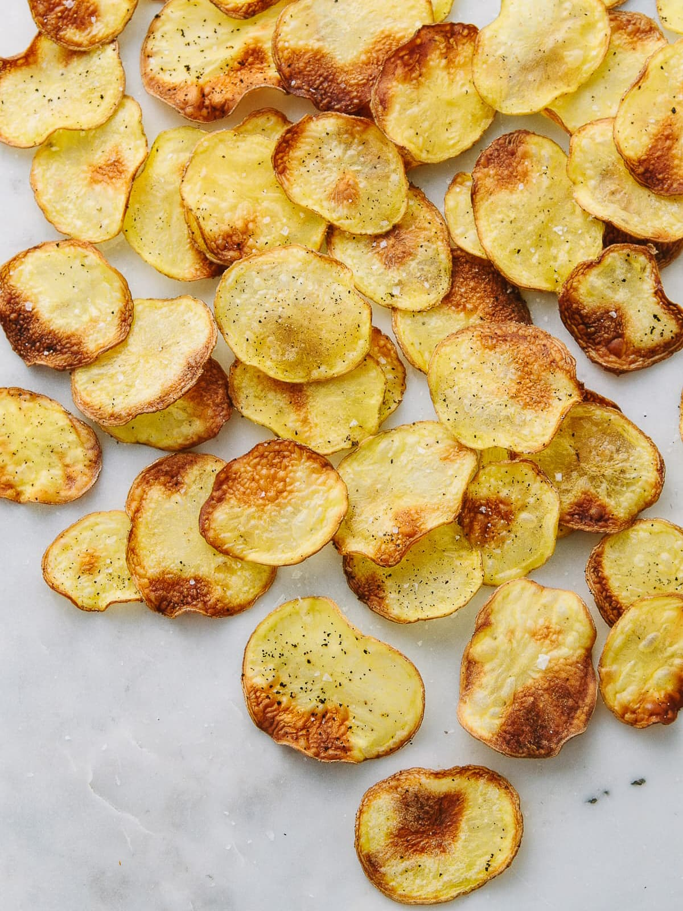

Chips

Description
So simple, healthy and easy to make, once you make your own crispy
homemade baked potato chips, there’s no going back to the bag!
Ingredients
- 2 medium potatoes (I used gold)
- 2 tsp olive oil
- himalayan salt, to taste – go easy as they can get too salty
Steps
- Preheat the oven to 400 F.
- Prep a baking sheet with parchment paper or silicone mat.
- Using a sharp knife, food processor attachment or mandolin,
thinly slice the potatoes to about 1/16 of an inch.
- Pat the potatoes dry to remove excess moisture.
- Toss potatoes with oil and salt in medium size bowl
- Place the potatoes in a single layer on the baking sheet,
spread them out so they don’t touch each other.
- Place in the oven and bake for 10 minutes.
- Carefully remove from the oven, turn each chip and
bake another 7 – 9 minutes, keep an eye on them
towards the end so they don’t overcook.
- Once baked, remove from oven and let cool for 2 – 5 min.